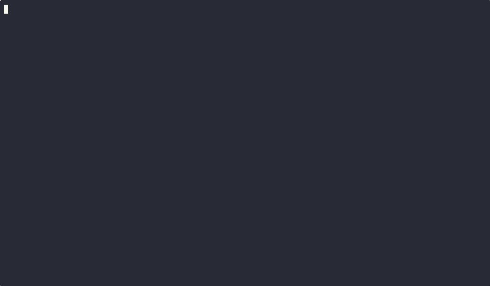

How to use ComChan
Currently in the latest version, ComChan has the following features
Basic Serial Monitor
ComChan can be used as a basic serial monitor for EMbedded Applications.
In the Basic Serial Monitor mode, it has Read/Write capabilities.
Here is a GIF showing how it works in basic mode :
Video 1 (Hello World printing)
We will run a basic Arduino application that continuously prints Hello World
Apparatus Used:
- Arduino Uno
- ComChan
Configuration
- Port: /dev/ttyACM0 (for Linux) OR COM3 (for windows) (can be any number)
- Baud Rate: 9600
Command Used :
comchan -p <port> -r <baud_rate>

Video 2 (User Input)
We will now run another Arduino Application that takes User Input (1 or 0) to turn on and off the LED.
Working:
When the user types on or ON, the LED on the Arduino Turn ON and when the user types off or OFF, the LED turn OFF.
Here are the GIF's :

Verbose Mode
Command Used :
comchan -p <port> -r <baud_rate> -v
# OR
comchan --port <port> --baud <baud_rate> --verbose
ComChan also has a verbose mode where the timestamps are available.
The time stamps the time in milliseconds since January 1 1970 (Unix Epoch).
Here is the GIF

Logging
Command Used :
comchan -p <port> -r <baud_rate> -l <file_name>.log
# OR
comchan --port <port> --baud <baud_rate> --log <file_name>.log
Log Files can be used to access the Serial Monitor data on a later date to debug Embedded Applications.
Here is the GIF of a Normal Serial Monitor

Here is the GIF of a log file
You can access the sample log file here.